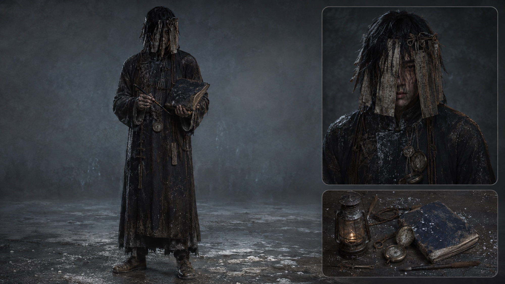
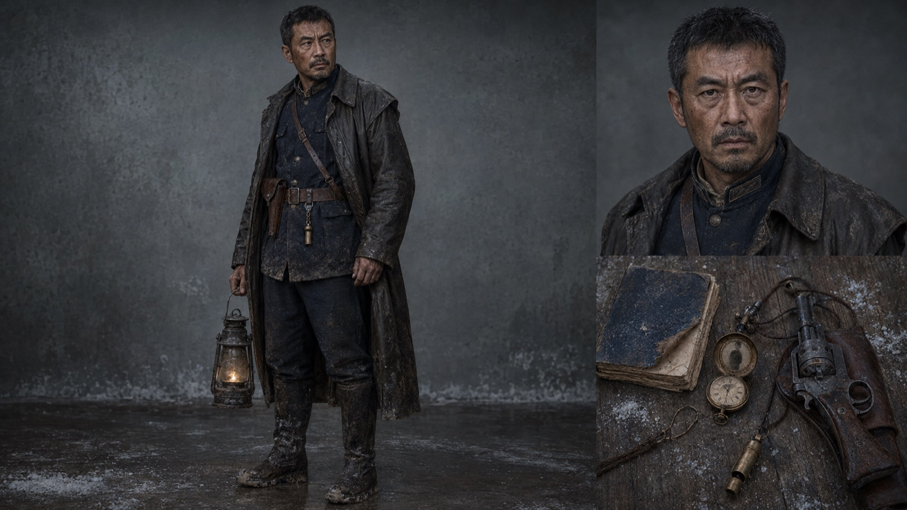
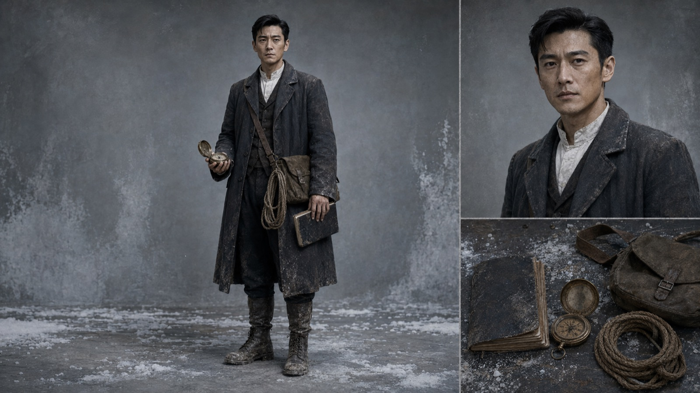

03/03 — PROMO · 克苏鲁
网之外
自投罗网 · 克苏鲁风格 FPS 宣传片 · 15 秒 · Seedance 2.0
APPROACH · 视角与交付
非人视角，不用一句解释
不出现旁白字幕说明「我是古神视角」，只靠镜头位置、失真、声音和空间反应证明视角来源：鱼眼、天花板裂缝、贴地滑行、核心反打。克苏鲁三要素逐项落镜——几何异化、颜色腐败、重复回旋。
15 秒也可以是一个完整的世界观表达。命题先行、视角自律、交付对标——短片不等于小品，规格不因时长而降低。
- 视角非人视角自证：只靠镜头语言，不靠解释
- 三要素几何异化 / 颜色腐败 / 重复回旋
- 合规冷白、深紫、苔绿、焦黑四主色，避开血腥红色方向，减少审核风险
- 交付评审点对照表逐条对应；A/B 方案：整段直出或逐镜生成


「他们举枪瞄准核心，准星却被核心反向锁定。」—— 一句话概念，15 秒讲完